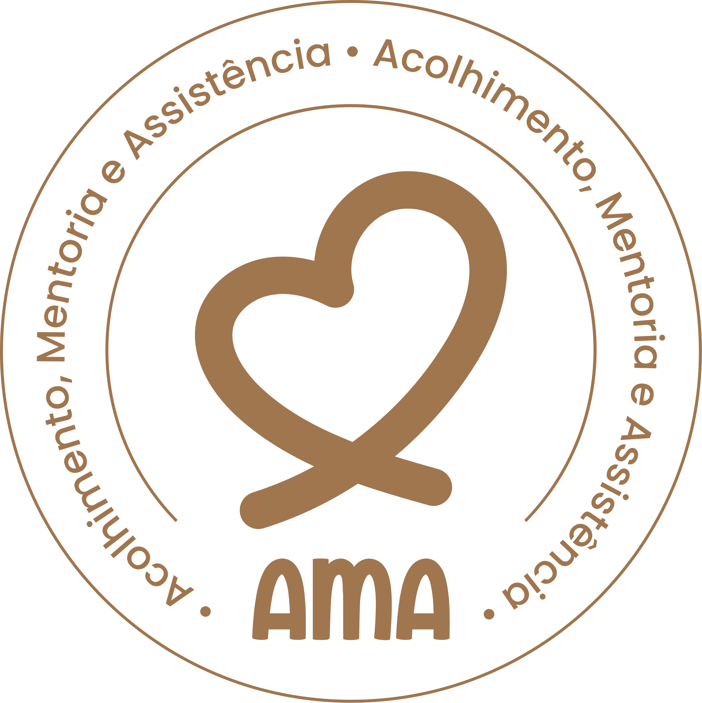
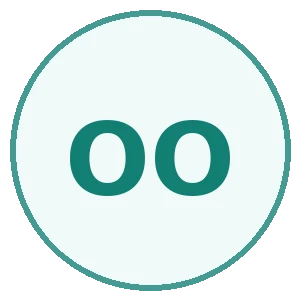

Amor que acolhe. Sabedoria que transforma.
Fundado em 2021 pelo Pastor José Chagas na Vila Mauro Fecury I (região do Itaqui-Bacanga, São Luís/MA), o Instituto AMA nasceu da urgência de transformar a caridade intuitiva em autonomia social sustentável.
O que começou como um movimento comunitário de apoio emergencial a famílias vulneráveis evoluiu para uma instituição de referência em engenharia de impacto social, estruturada sobre três pilares inegociáveis: Acolhimento, para resgatar a dignidade; Mentoria, para ensinar o caminho da autonomia; e Assistência, para suprir as necessidades com dados e responsabilidade.

Nossa Identidade & Compromisso Social
Missão
Promover a autonomia integral de crianças, jovens e famílias em vulnerabilidade social através do acolhimento humano, da educação multissensorial e do desenvolvimento econômico comunitário.
Visão
Ser reconhecido até 2027 como o principal polo autônomo de inovação e engenharia de impacto social do Maranhão, servindo de modelo nacional em governança, transparência e transformação de vida.
Valores
Ética inegociável, Transparência auditada, Humanização no acolhimento, Empatia comunitária e Excelência contínua em cada projeto executado.
Membros da Diretoria Executiva
Liderança responsável pelo cumprimento do estatuto social, prestação de contas e diretrizes estratégicas da instituição.
José Chagas
PresidênciaRepresentação institucional, direção geral e convocação das instâncias.
Silas Barros
Vice-PresidênciaSubstituição da Presidência e apoio à coordenação geral.
Pamala Ribeiro
1ª SecretariaAtas, registros, expedientes e arquivo institucional.
Élida Brígida
2ª SecretariaApoio e substituição da 1ª Secretaria.
Edivaldo Ferreira
TesorariaGestão financeira, registros, pagamentos e prestação de contas.
Glailson Pinto
Patrimônio e TransporteInventário, guarda, movimentação e conservação dos bens.
João Carlos Silva
Logística e ExecuçãoLogística das ações, materiais e apoio à execução.
Clênio Ramos, Maria Merces, George Farias & Denizar Oliveira
Coordenação de Apoio e LogísticaCoordenação logística das ações comunitárias, suprimentos, materiais e apoio à execução operacional de campo.
Raquel Pavão Rocha Maranhão
Gestão de Convênios & ProjetosElaborar projetos, acompanhar convênios, prazos, obrigações, captação de recursos e prestação de contas vinculada.
Ana Barbara
Coordenação AdministrativaCoordenar as atividades administrativas e financeiras do Instituto.
Maria do Carmo, Solange Pereira & João Carlos Silva
Conselho FiscalO Conselho Fiscal é o órgão responsável por fiscalizar e avaliar as ações financeiras do Instituto AMA.
Marcilene Almeida, Dallyon Estrela & Jaciara Sousa
Conselho PsicopedagógicoO conselho psicopedagógico é responsável por acompanhar e avaliar o desenvolvimento psicopedagógico dos estudantes do Instituto AMA.

Hudson Abreu, Maria dos Anjos & Obiane Oliveira
Coordenação de Comunicação e MídiaA Coordenação de Comunicação e Mídia (CCM) é o setor responsável por articular e executar as ações de comunicação, cobertura institucional e mídias do Instituto AMA, garantindo transparência, visibilidade e engajamento comunitário.
Silas Barros, Clênio Silva & Auri Silva
Coordenação Projeto Ação AMACoordenação técnica e operacional das ações sociais, mutirões comunitários, doações e iniciativas de campo do Projeto Ação AMA.
Coordenação de Projetos
Equipe técnica e operacional responsável pela coordenação dos programas e projetos do Instituto.
Élida Silva & Solange Pereira
Coordenação do Projeto Acolher.
Pamala Ribeiro & Marcilene Almeida
Coordenação do Projeto Mulheres Empreendedoras.
João Carlos Silva & Glailson Pinto
Coordenação do Projeto Capacitar.
Silas Barros, Clênio Silva & Auri Silva
Coordenação do Projeto Ação AMA.
Estagiários & Voluntários de Apoio
Agradecemos ao grupo dedicado de universitários e voluntários que sustentam a pulsação diária de nossas atividades comunitárias:
Da Sede Provisória à Nova Sede na Vila Mauro Fecury I
Atualmente, o Instituto AMA opera em uma sede provisória anexa à Assembleia de Deus. Este espaço, generosamente cedido, foi o berço que viabilizou nossos primeiros anos de atuação e permitiu o acolhimento imediato de mais de 4.200 famílias da região.
Nosso planejamento estratégico prevê a aquisição do terreno e a construção da Nova Sede do Instituto AMA (equipada com salas de aula interativas, horta comunitária, auditório e consultórios de atendimento psicológico e odontológico).
Faça Parte Dessa Construção
Sua doação corporativa ou individual acelera o sonho da sede própria.
Quero Apoiar a Nova Sede